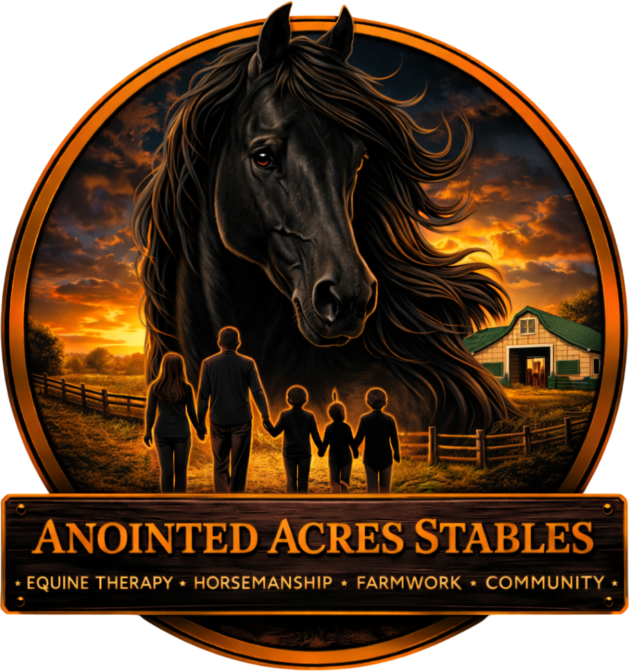

Partner Farm
Anointed Acres Stables
"Empowering Families Through Equine Connection"
At Anointed Acres Stables, the journey is rooted in a mission of empowering families and at-risk youth through profound equine connection. This is a sanctuary where purpose and passion converge — fostering character, discipline, empathy, and resilience in every visit. Their specialized character development programs combine horsemanship with therapeutic farmwork, teaching children and families to navigate life's challenges with newfound confidence and purpose.
Services & Experiences
🐴 Trail Rides
🧠 Equine-Assisted Therapy
🌱 Youth Character Development
🌾 Therapeutic Farmwork
🎂 Birthday Parties
👨👩👧👦 Family Experiences
🐎 Horseback Riding
🚜 Farm Tours